La Comisión Europea abrirá mañana , miércoles , el debate para reformar los tratados comunitarios con la publicación de su dictámen sobre los cambios que deben introducirse para adaptar las instituciones europeas al ingreso de otros 13 países en la Unión.
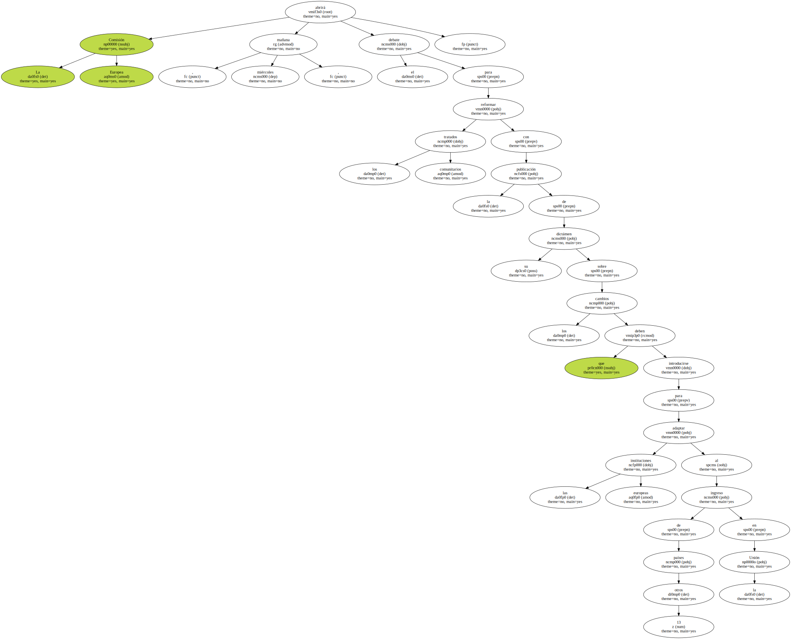Será la primera contribución pública a un debate que mantendrá ocupados a los Quince durante todo el año , pues en la pasada cumbre de Helsinki se marcaron el objetivo de concluir la reforma en el Consejo Europeo de Niza del próximo diciembre.
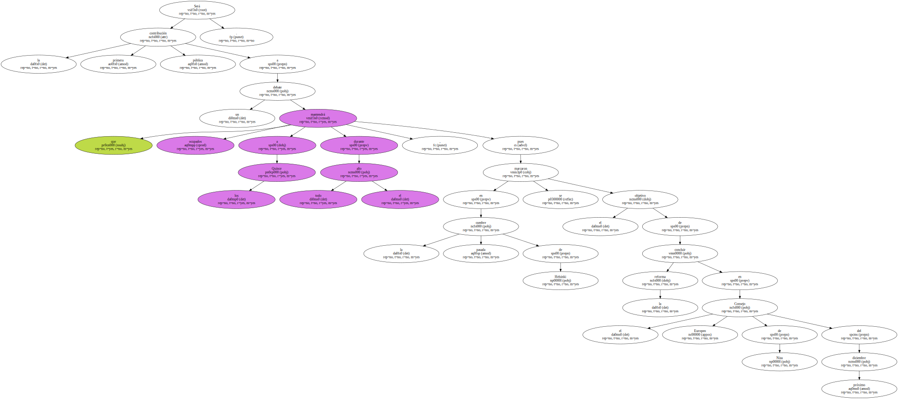El presidente del Ejecutivo comunitario , Romano Prodi , y el comisario europeo Michel Barnier , responsable directo de la propuesta , presentarán el documento en una reunión pública de la Mesa de Portavoces ( Conferencia de presidentes ) del Parlamento Europeo.
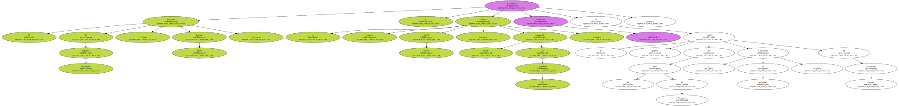Más que una propuesta concreta sobre cómo cambiar el funcionamiento de las instituciones , la contribución de la Comisión Europea " marcará las pistas a seguir para la reforma " , señalaron hoy fuentes del Ejecutivo.
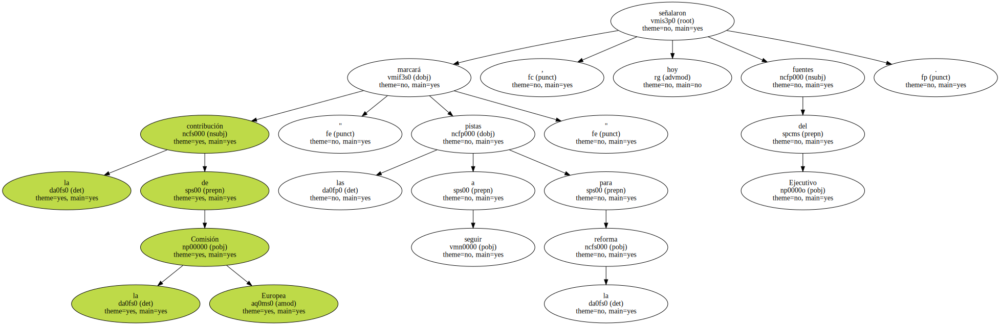Sobre estas " pistas " se abrirán las negociaciones de la Conferencia Intergubernamental el próximo 14 de febrero , el foro en el que los ministros de Exteriores de la UE , apoyados por un " grupo preparatorio " de altos funcionarios procedentes de las quince capitales , negociarán la reforma de los tratados.

La presidencia portuguesa de la UE ha previsto , desde esa fecha hasta junio , un total de 16 reuniones de negociación , seis de ellas exclusivamente ministeriales.
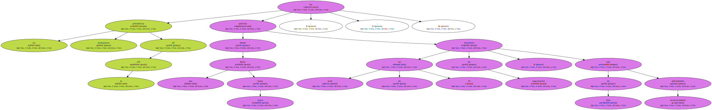Ésta es la tercera Conferencia Intergubernamental para reformar los tratados que se convoca en los últimos diez años , después de las que concluyeron en los tratados de Maastricht ( 1991 ) y Amsterdam ( 1997 ).
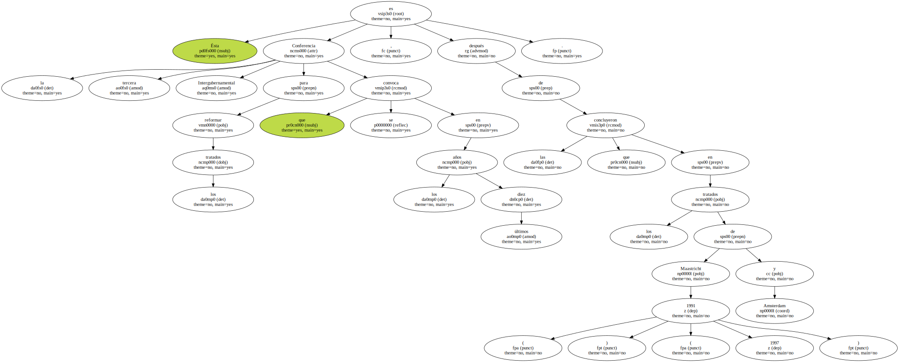Los Quince se han marcado en esta ocasión un plazo más corto para alcanzar un acuerdo para cumplir su promesa de que la UE esté lista el 1 de enero del 2003 para acoger a aquellos Estados que concluyan sus negociaciones de adhesión.
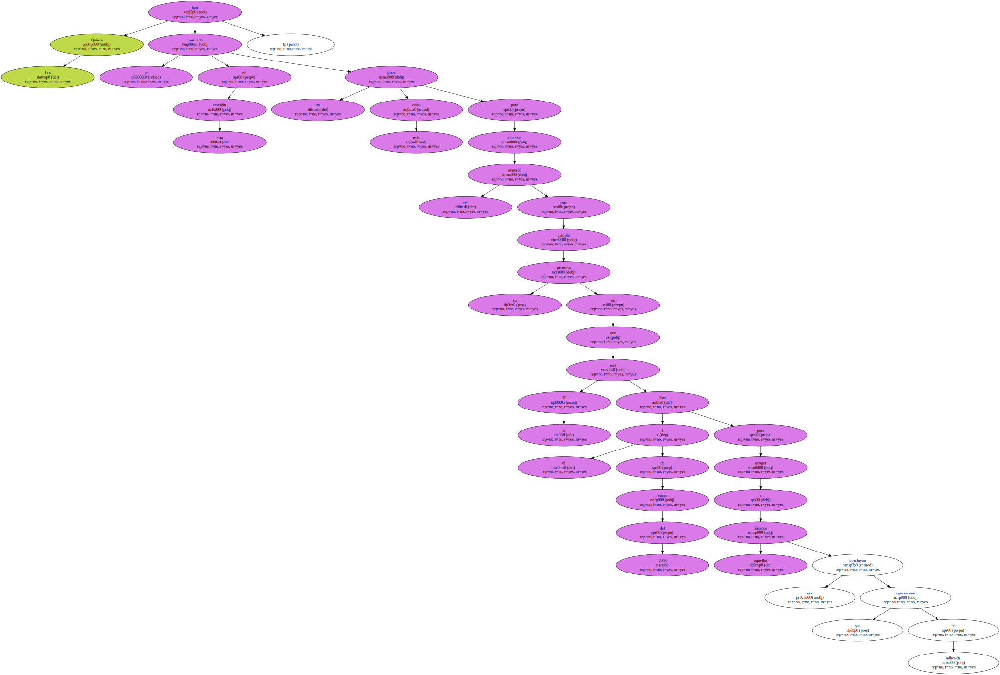Se ha tenido en cuenta que los parlamentos nacionales necesitarán al menos dos años para ratificar el nuevo Tratado.
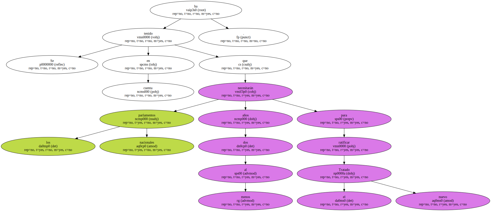Ésta es una de las razones que llevaron a acordar que se limiten las negociaciones a la reforma de los tres capítulos que quedaron pendientes en las negociaciones del Tratado de Amsterdam : el número de miembros de la Comisión Europea , los votos de cada país en el Consejo de Ministros y la extensión de las decisiones que se adoptan por mayoría cualificada.
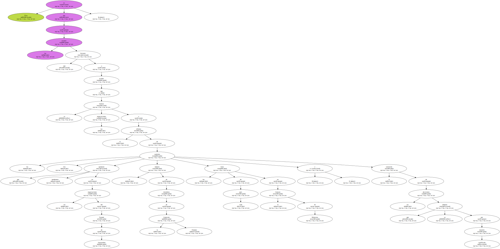Estas tres modificaciones son las mínimas que deben hacerse para evitar que se paralice el funcionamiento de las instituciones cuando la UE tenga 20 ó 25 Estados miembros , cifra que hará muy difícil adoptar decisiones por unanimidad.
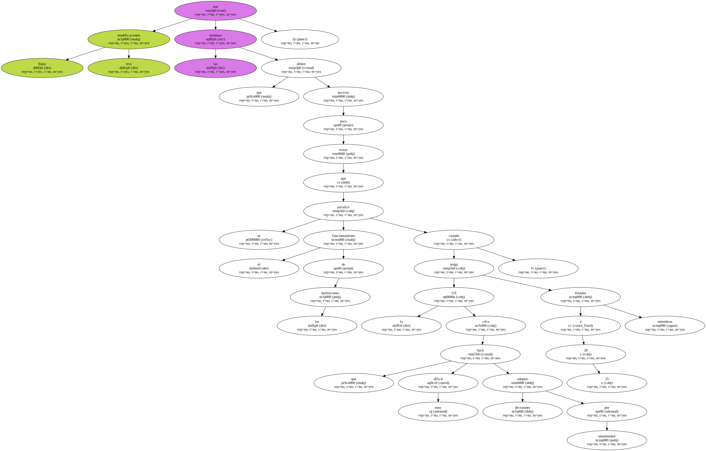Sin embargo , la Comisión Europea propondrá , como ya adelantó Prodi en Helsinki , que se aborden otra serie de asuntos , entre ellos la posibilidad de recurrir a la " cooperación reforzada " para que los Estados que quieran realizar políticas en común no se vean frenados por el resto , como sucede ahora en materia de armonización fiscal , por ejemplo.
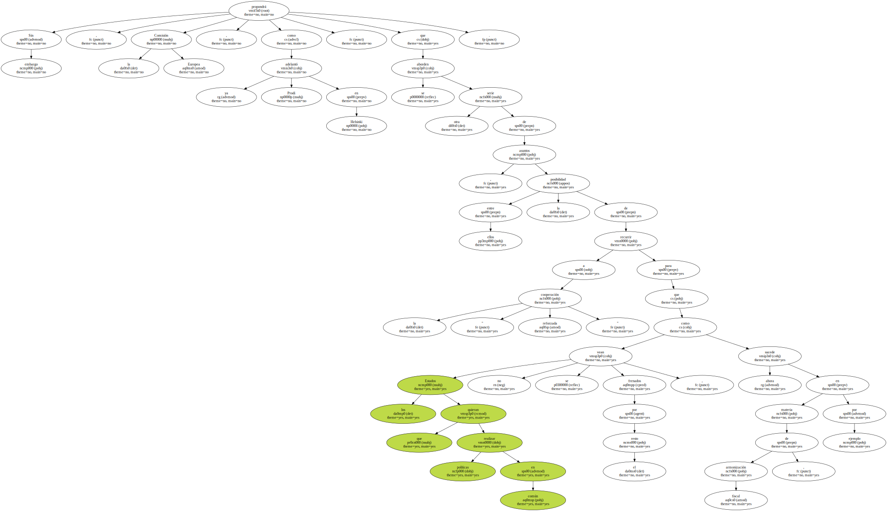